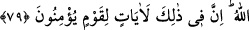

79. Göğün boşluğunda emre boyun eğdirilmiş olarak uçuşan kuşları görmediler
mi? Onları orada Allah’tan başkası tutamaz. Şüphesiz bunda inanan bir toplum için
ibretler vardır.
Yerden uzak olmayan “göğün boşluğunda emre boyun eğdirilmiş olarak” kendileri
için yaratılan kanatlar ve uçuşa yardımcı olan çeşitli sebeplerle Allah’ın uçma emrine
boyun eğdirilmiş olarak “uçuşan kuşları görmediler mi?” Allah’ın kudretine istidlal
için o kuşlara bakmadılar mı?
Bu cümle, kuşların haline bakan kimseye onların durumunu ifâde etmek ve bu konuda
onları hayrete sevk etmek için getirilmiştir.
“emre boyun eğdirilmiş olarak” ifâdesi bir mübâlağa ifâdesidir. Çünkü teshîr,
istediği gibi tasarruf edebilmesi için bir şeyi başka bir şeye boyun eğdirmek demektir.
Deniz, vapur ve hayvanların insanın emrine boyun eğdirilmesi gibi. İşte burada da
istediği şekilde uçabilmesi için hava kuşun emrine âmâde kılınmıştır. Aslında kuşun
tabîatı düşmesini gerektirirdi. Fakat Allah onun tabîatını uçmak için boyun eğdirmiştir.
Burada uçmanın kuşun tabiatı gereği olmadığına, bunun ancak Allah’ın âmâde
kılmasıyla mümkün olduğuna dikkat çekilmektedir. Keza ateşin yakması ve soğuğun
helak etmesi de kendi zâtları ile değil Allah Teâlâ’nın te’siri iledir.
Boşluğun göğe izâfe edilmesi, onun bakan kimseye göre gök tarafında olması
sebebiyledir.
“Onları orada Allah’tan başkası tutamaz.” Kuşlar kanatlarını kapatıp açarken ve
gökte dururken onları yere düşmekten ancak geniş kudretiyle ve küçük-büyük tüyler
vâsıtasıyla idâre eden Allah Teâlâ tutar. Çünkü vücudunun ağırlığı ve havanın kıvamının
inceliği düşmesini gerektirir. Çünkü kuşun üstle bir münasebeti olmadığı gibi alt tarafta
da onu tutacak direk ve benzeri bir şey yoktur. Yüzen kişi için su ne ise, kuş için de hava
öyledir. Çünkü yüzen kişi ellerini kapayıp açar ve vücudunun ağır, suyun hafif olmasına
rağmen batmaz. Bundan daha fazla insanı hayrete düşüren ve Allah’ın yüce kudretine
delâlet eden şey, bazı kuşların havada uçmasıdır.
“Şüphesiz bunda” hafif kanatlar ve kuyruklar verip uçmayı mümkün kılan bir
yaratılışta yaratarak kuşları uçma emrine boyun eğdirmesinde, yine havayı kendisinde
uçmak mümkün olacak şekilde yaratmasında ve kuşları tabîatlarının aksine havada
tutmasında “inanan bir toplum için ibretler” apaçık işâretler “vardır.” Yâni îman
etmeleri onların şiârındandır. İbretlerin onlara tahsis edilmesi, faydalananın onlar
olması sebebiyledir. Çünkü onlar, zikredilenler hakkında tefekkür kanadıyla ma‘rifet
havasında uçarlar ve kerâmet yuvasına ererler.
Tefekkür seni bu hâneden yukarı çeker
Seni esrar sarayının perdesine doğru çeker